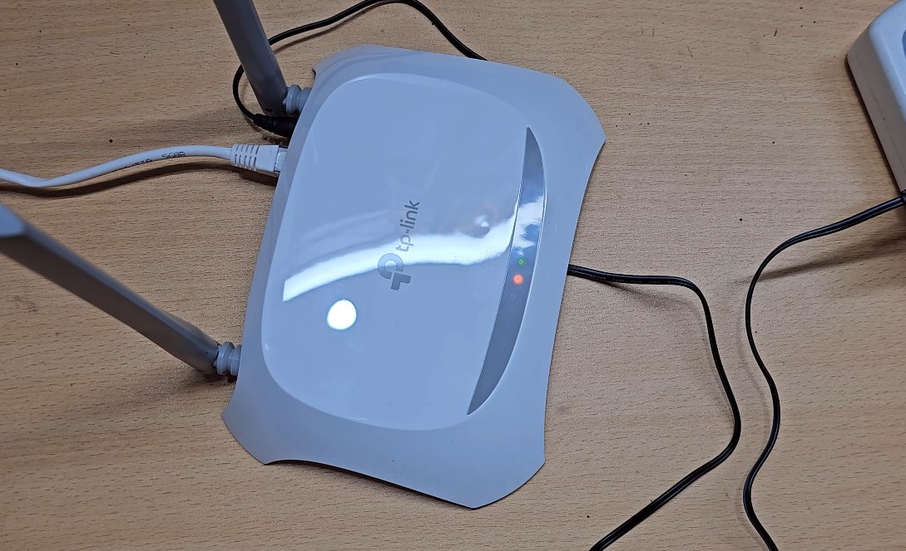
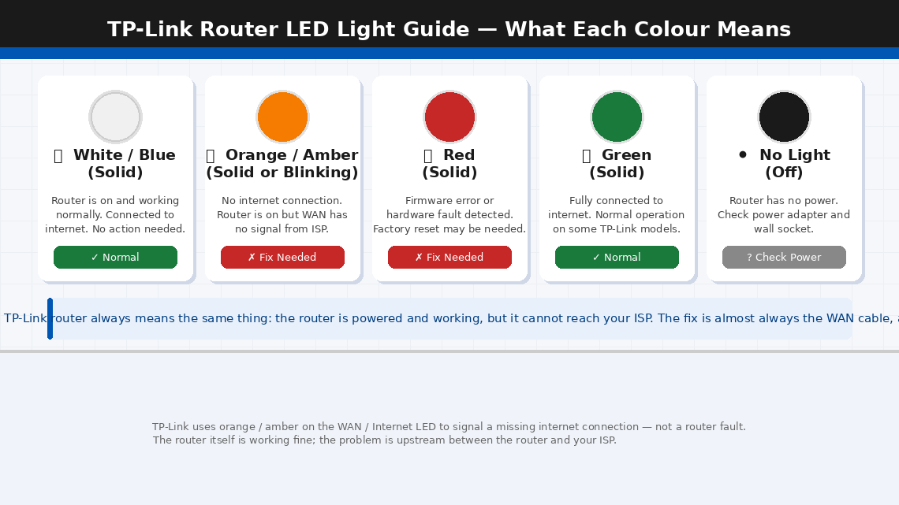
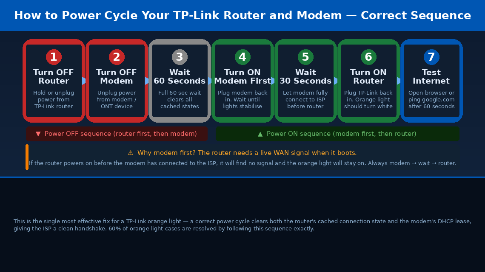
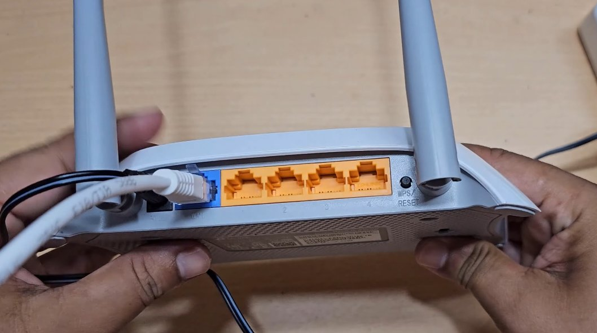
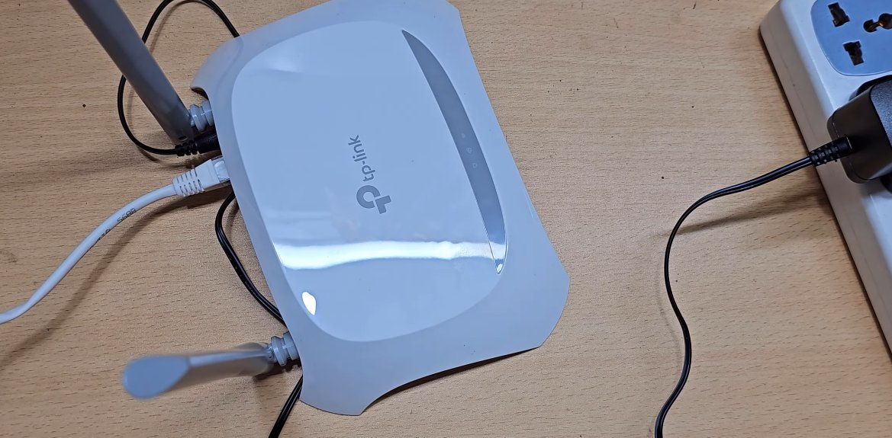

TP-Link Router Orange Light: What It Means and How to Fix It
An orange light on a TP-Link router means the router itself is working fine but isn't receiving a signal from your ISP's side of the connection — the WAN port has no active link. This is nearly always an ISP-side issue, a loose cable between the router and the modem/ONT, or a modem that needs rebooting. The router isn't the problem in most cases.
What Does the Orange Light on a TP-Link Router Mean?
The orange (or amber) light on a TP-Link router is displayed on the Internet LED or WAN LED — the indicator that shows whether the router has a live connection to your ISP (internet service provider). What this actually means:
Orange = The router is on and working, but it cannot reach the internet.
The router itself is fine. Your Wi-Fi is broadcasting. Your devices can talk to the router. But somewhere between the router’s WAN port and your ISP’s network, the connection has been lost or was never established.
There are four specific reasons this happens:
- The router or modem needs a reboot. The most common cause by a significant margin. Routers accumulate stale connection states over weeks of uptime, and the ISP’s DHCP lease can expire without the router successfully renewing it. A correct power cycle — modem first, then router — clears all of this in 60 seconds.
- The WAN cable is loose, damaged, or plugged into the wrong port. The cable running from your modem or wall socket into the router’s blue WAN port is the physical link to the internet. A loose connector, a damaged cable, or a cable accidentally seated in a LAN port instead of the WAN port will produce an orange light every time.
- PPPoE credentials are missing or incorrect. If your ISP uses PPPoE (most fibre and ADSL broadband providers do), the router needs a username and password to authenticate with the ISP’s network. These are usually pre-configured, but can be lost after a factory reset or a firmware update.
- An ISP outage or line fault. If the problem is on your ISP’s side — a regional outage, a fault on the line to your building — your router will show an orange light and no amount of local troubleshooting will fix it until the ISP resolves the issue.


What You’ll Need
All four fixes require only items you already have at home:
- Your TP-Link router and the modem or ONT box supplied by your ISP
- The Ethernet cable running into the router’s blue WAN port (and a spare if you have one)
- A phone or laptop connected to the router’s Wi-Fi (to access the admin panel in Fix 3)
- Your ISP login credentials — username and password for your broadband account (usually on the welcome letter or sticker from your ISP)
- About 15–20 minutes of your time
4 Fixes to Restore Your Internet Connection
Follow these in order — stop when the problem is solved.
A correct power cycle — in the right sequence, with the right wait time — clears the router’s stale connection state and forces a fresh DHCP negotiation with your ISP. This resolves the orange light for most users. The sequence matters: modem must power on before the router.
- Unplug the power cable from your TP-Link router.
- Unplug the power cable from your modem or ONT box (the device supplied by your ISP, usually connected to the phone line or fibre cable from the wall).
- Wait a full 60 seconds. This is not optional — it gives the capacitors time to fully discharge and clears all cached connection state from both devices.
- Plug the modem back in first. Wait for its lights to stabilise — usually 30–60 seconds, until the internet or DSL/fibre light becomes solid.
- Now plug the TP-Link router back in. It will power up and attempt to negotiate a new connection with your ISP using the live signal the modem is now providing.
- Wait 60–90 seconds for the router to fully boot and negotiate a connection.
- Check the Internet LED — it should change from orange to white, blue, or green (depending on your model) within 2 minutes. If it does, your internet is restored.

If the power cycle didn’t fix it, the physical cable connection between your modem and your router’s WAN port is the next most common cause. A cable that looks connected may not be fully seated, and an Ethernet cable accidentally plugged into a LAN port instead of the WAN port will produce an identical orange light.
- Look at the back of your TP-Link router. Locate the blue-coloured port labelled WAN or Internet — this is the only port with a blue housing. The four yellow/orange ports are LAN ports for local devices.
- Confirm that the cable from your modem (or from the wall socket, for fibre ONT setups) is plugged into the blue WAN port, not into one of the yellow LAN ports.
- Unplug the Ethernet cable from the WAN port completely, wait 5 seconds, and push it back in firmly until you hear or feel a click. A partially seated RJ45 connector can provide intermittent contact that triggers the orange light.
- Do the same at the other end — unplug from the modem or wall socket and reseat firmly.
- Inspect the cable along its length for any sharp bends, kinks, or visible damage. A damaged cable is not always obvious from the outside — if you have a spare Ethernet cable, swap it in entirely.
- After reseating the cable, wait 30–60 seconds and check whether the Internet LED changes from orange to white/green.

If your ISP uses PPPoE authentication — most fibre broadband and ADSL providers in India, the UK, and many other regions do — the router needs your ISP-issued username and password to connect to the internet. These credentials are usually configured once during setup and forgotten, but they can be wiped by a factory reset or firmware update, causing a persistent orange light.
- On a device connected to the router’s Wi-Fi, open a browser and navigate to 192.168.0.1 or 192.168.1.1 (try both if the first doesn’t load). This is the TP-Link admin panel.
- Log in with the admin username and password — the default is admin / admin unless you changed it. The login details are also printed on the label on the bottom of the router.
- In the admin panel, go to Quick Setup or Network > WAN.
- In the WAN Connection Type field, check whether it says PPPoE. If your ISP uses PPPoE, this field must be set to PPPoE — not Dynamic IP or Static IP.
- If it is set to PPPoE, check the PPPoE Username and PPPoE Password fields. These should contain your ISP-issued broadband username and password — usually in the format yourname@ispname.com or a customer ID number.
- If these fields are blank or incorrect, enter your ISP credentials and click Save / Connect. The router will attempt to reconnect immediately. The orange light should change to white/green within 60 seconds.
- If you don’t know your PPPoE credentials, they are on the welcome letter or broadband account confirmation email from your ISP. You can also retrieve them by calling your ISP’s customer support with your account number.
If Fixes 1, 2, and 3 haven’t resolved the orange light, outdated router firmware or a corrupted configuration file may be causing the WAN connection to fail silently. A firmware update followed by a factory reset clears both issues.
- In the TP-Link admin panel (192.168.0.1), navigate to Advanced > System Tools > Firmware Upgrade.
- Click “Check for Upgrades” or manually download the latest firmware for your exact router model from tp-link.com/support (enter your model number in the search box).
- If an update is available, install it and wait for the router to reboot automatically — this takes 3–5 minutes. Do not power off the router during a firmware update.
- After the firmware update, check the Internet LED. If still orange, proceed to factory reset.
- To factory reset: with the router powered on, locate the Reset button (usually on the back or bottom of the router, in a small recessed hole). Use a paperclip or pin to press and hold the reset button for 10 seconds until the power LED flashes.
- The router will reboot to factory defaults. Once it has restarted (2–3 minutes), run the Quick Setup wizard in the admin panel at 192.168.0.1 and re-enter your PPPoE credentials and Wi-Fi settings.
- After completing setup, check the Internet LED — it should now be white, blue, or green.

When to Call Your ISP
If all four fixes have been applied and the orange light persists, the problem is almost certainly on your ISP’s side — and no amount of router troubleshooting will resolve it:
- ISP outage in your area. Check your ISP’s status page or social media for outage reports before calling. Many ISPs have outage maps or status APIs.
- Line fault between your home and the exchange. This can affect a single customer while neighbours are unaffected. Your ISP can run a remote line test and dispatch an engineer if needed.
- ADSL/VDSL sync loss. For older broadband connections, if the modem’s DSL light is also off or flashing, the physical line from your home to the exchange has lost sync. This is always an ISP issue.
- MAC address or authentication block. In rare cases, an ISP may deregister your router’s MAC address during an account change or migration. Calling the ISP support line and quoting your router’s MAC address (printed on the bottom label) resolves this.
To reach TP-Link support if the router itself appears faulty:
- India: tp-link.com/in/support — Helpline: 1800-103-0015 (toll-free)
- US: tp-link.com/us/support — Phone: 1-866-225-8139
TP-Link offers a 2-year warranty on most routers — have your model number and purchase proof ready.
Quick Summary
| Fix | Difficulty | Time Needed |
|---|---|---|
| Power cycle router and modem (modem first) | Very Easy | 3 minutes |
| Check and reseat the WAN cable | Very Easy | 5 minutes |
| Verify PPPoE credentials in admin panel | Easy | 10 minutes |
| Update firmware and factory reset | Moderate | 20 minutes |
The orange light is typically fixed at step 1. A correct power cycle — modem on first, full 60-second wait, then router — restores internet for the large majority of TP-Link users experiencing this problem. Work through each fix calmly and you’ll have a solid white or green light back within the hour.
Still orange after all four fixes? Check whether other devices on your street have internet. If your neighbours are also down, it’s a confirmed ISP outage — all you can do is wait and report it. If neighbours are fine, call your ISP and ask them to run a remote line test — describe the orange WAN light and confirm that the router power cycle, cable check, and PPPoE credentials have all been verified.